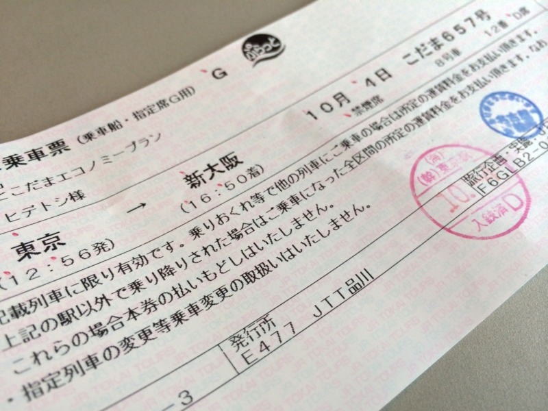
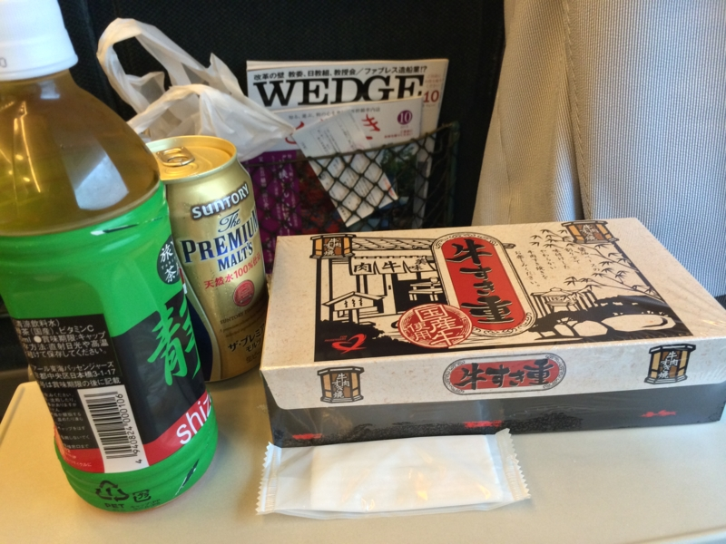
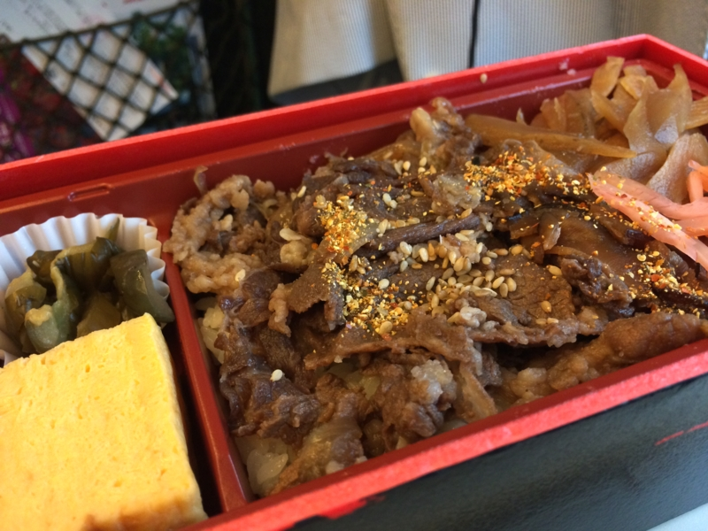
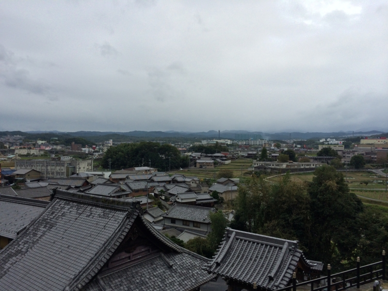

お墓参りに行ってきたった。
執筆日時：
Foursquare にメモしておいたところによると、前回は5月に行ったらしい。また半年放置してしまった。こういうのは、行くと決めて気が向いたときに行かないと、ズルズルと後回しになってしまう。おじいちゃんがなくなってそろそろ1年ということもあり、ついでに大阪にも寄って線香をあげてくることにした。
本当は親父もつれていくつもりだったのだけど、痛風の発作が出たとかなんだとかで結局独り。だったら、こだまでのんびり行くのも悪くあるまいと思い、前回と同じくぷらっとこだま（ぷらっとこだまにのってみたった。 - だるろぐ）のチケットをとって、グリーン車でゴロゴロしていた。

前回と違うのは、Web での予約ができなくなっていること？ 対面でしか売らなくなったのかな。まぁ、普通のチケットと間違えて扱いを間違う客も多いそうなので（乗り遅れたら失効、行先変更不可など）、そういう措置になったのだろう。

お弁当は「牛すき重」にした。よく考えたらこれ、前にも食べた気がしたが、美味しかったので問題ない。水分が足りないとグリーン車なのにエコノミー症候群になるという、あまりシャレにならない事態に陥るので、ちゃんとビールも買っておいたんやで。ぷらっとこだまはワンドリンクチケットがついてくるので、これはタダだ。

盛り付けが偏ってるのに気づかず、肉ばっかり先に食って、糸こんにゃくが残ってしまったときの敗北感。
6時前ごろに築港につき、夕食はばあちゃんととった。
この店は多分、自分が生まれる前からある。別にここ一番のメニューというわけではないが、ナマコを食べるのが自分の習慣になっている。死んだばあちゃんがナマコ大好きで、ここのをよく食べてた。
ばあちゃんによると、自分の残り寿命は2年なのだという。前もそういってた気がする。とにかく、それまでに嫁をみつけて紹介しないと、俺の寿命が先に断たれる。
あと「お前だから初めて言う、ここだけの話」も聞いたのだけど、これも昔聞いた気がする。ばあちゃんは記憶力が弱まっているのを非常に気にしていたので、初めて聞いたような顔をしてふむふむと相槌を打っておいた。他人の話を聞くのは割りと嫌いではないし、しゃべっていると普段は細い食も進むようで安心できる。
ばあちゃんと別れた後は、近鉄特急で名張へ向かった。名張でとった宿は「じゃらん」に載ってる料金と実際の料金が違う。自分の故郷でこんな羊頭狗肉のようなことをするところがあるとは嘆かわしいことだ。正直が商売の基本だっていうことがわからないのは、田舎根性丸出しであまり気分のよいものではない。二度と使うことはないが、値段相応の居心地だったので名前は記さないでおく。

次の日、のんびり10時ぐらいにのそのそと宿を出て、お寺まで行った。30分か一時間ぐらい、掃除したりぼーっとしたりして過ごした。
このあと行った伊勢参りもそうだけど、今にも泣き出しそうな天気なのに雨には一切降られず、割りとありがたかった。日ごろの行いやね （ゝω・）vｷｬﾋﾟ